With inner-product distance the hnswlib neighbour heuristic keeps only 1–2 links for most nodes, a few high-norm nodes collect tens of thousands of in-links, and 60–94 % of the nodes cannot be reached from the entry point on level 0. nmslib and flatnav show the same failure. I tried the following changes to hnswlib's index construction; each is searched plainly and with the well-connected (wc) search.
Result: both repairs make every node reachable but cost 2–6× the comparisons for at most +7 points of recall@1. Keeping pruned connections reduces the unreachable share to 4.6 % at M=96 and raises the recall@1 ceiling from about 0.35–0.46 to 0.64 (M=16) – 0.87 (M=96).
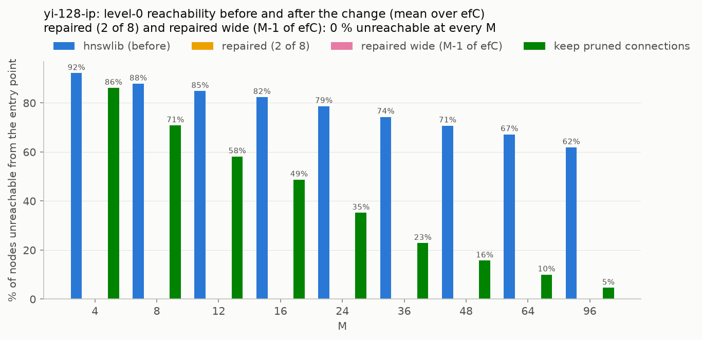
Panel per M, points are ef values; dashed = wc search.
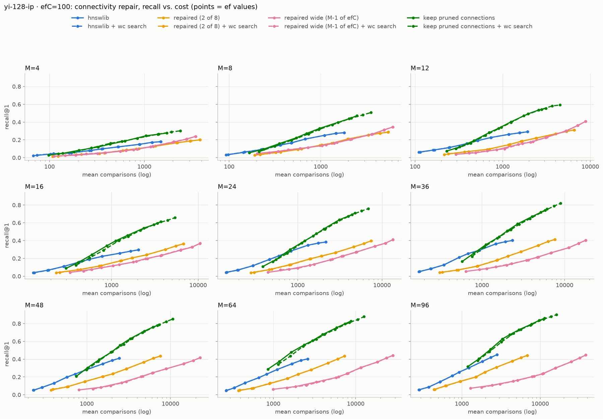
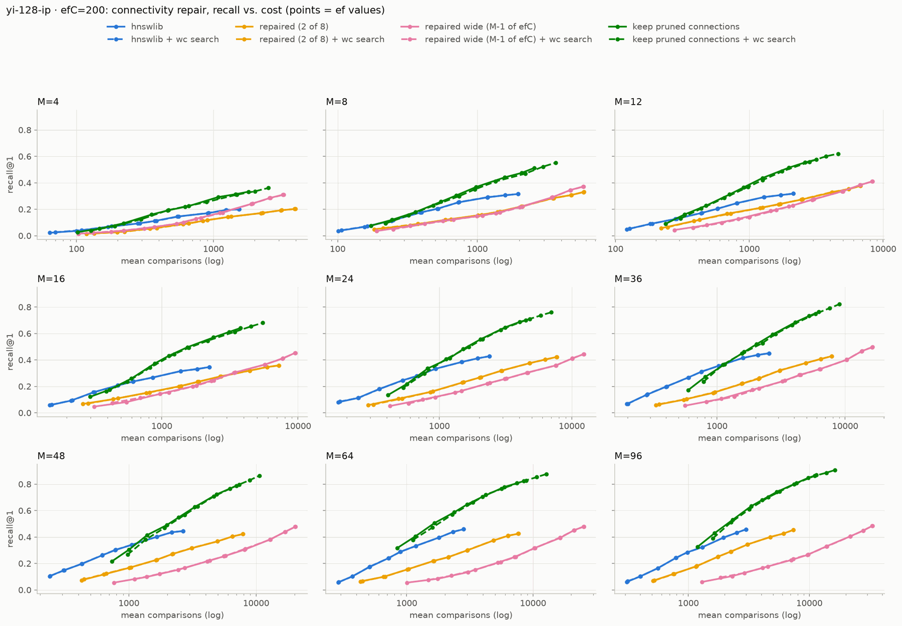
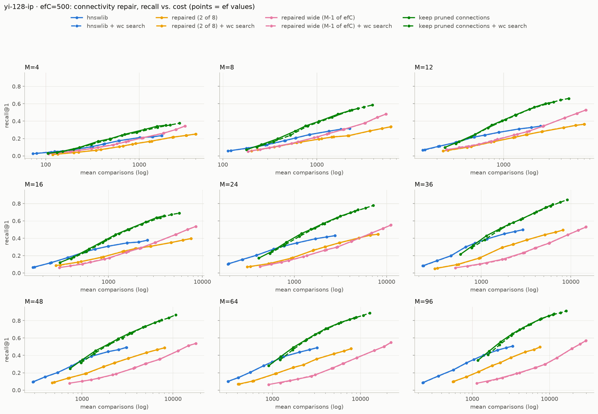
Percentage points for every M × ef, one panel per efC; blue = better. Note that the comparisons change too (see the trade-off plots).
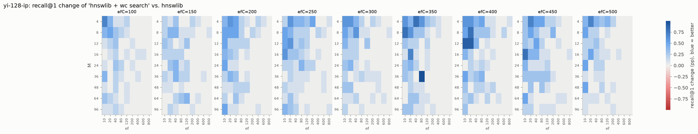
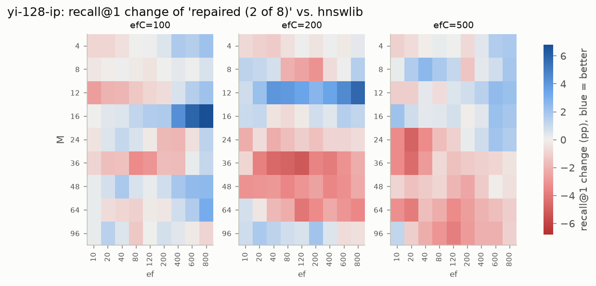
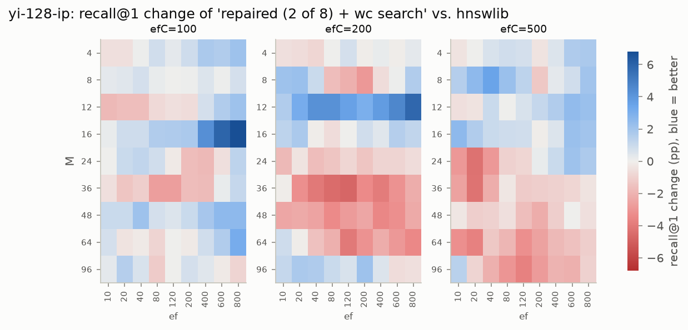
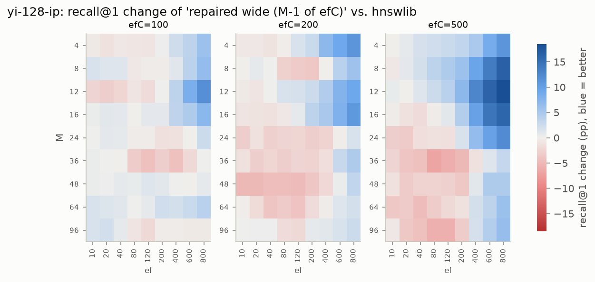
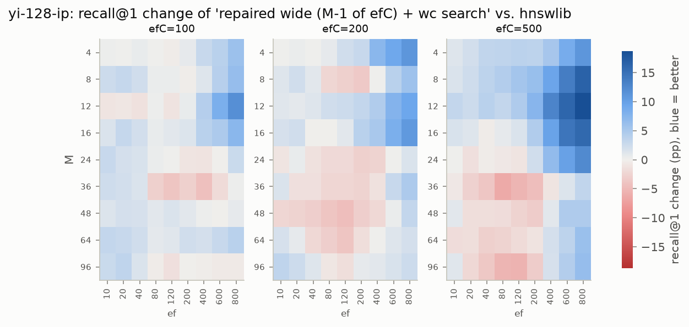
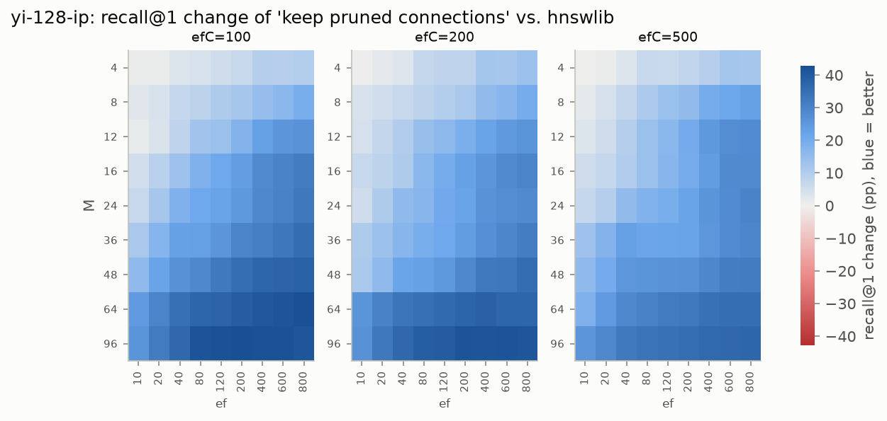
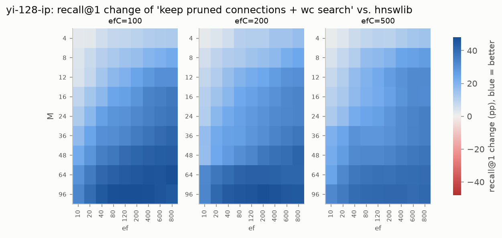